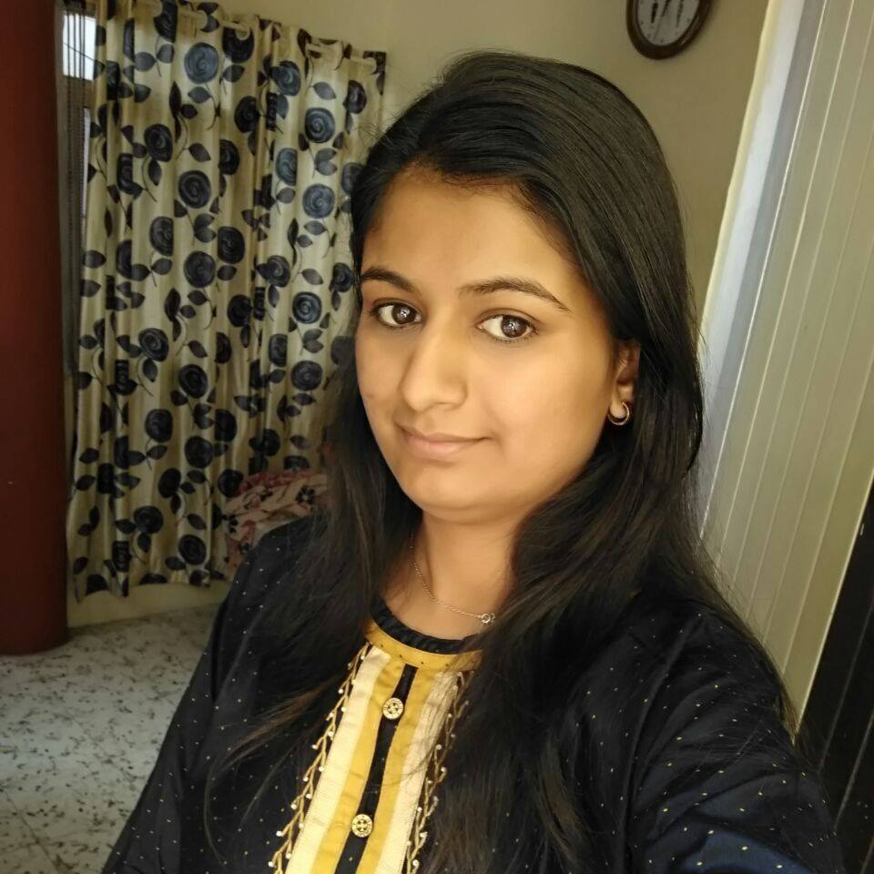
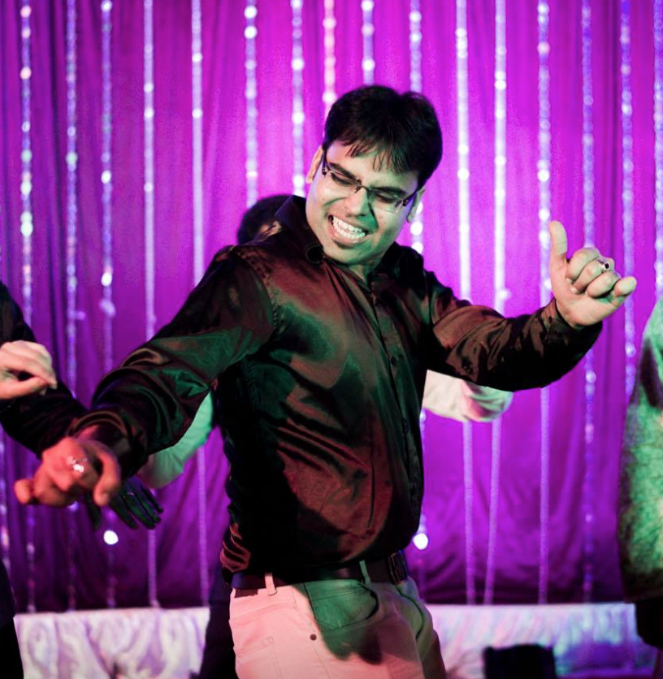
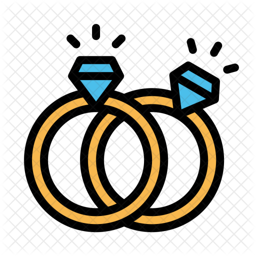
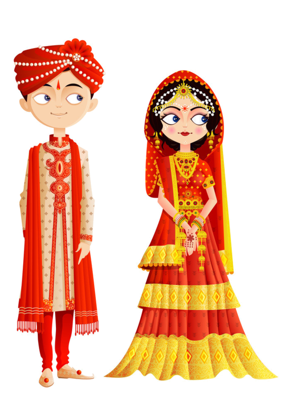

The Bride and Groom
Shivani Tiwari
 Shivani is a 90 born happy-go-lucky girl gifted with most amazing parents and a younger brother. Shivani has spent most of her time wondering all over India due to the nature of her father's job. Right from super hot Delhi to cool places like Darjeeling and Pathankot comes under her list of visited areas. After completing her graduation in Pune, she did a job there for three years and shifted to Bangalore exactly 2 years back in October 2015. Currently, she is working in Flipkart as an Engineer in Bangalore. She is one of the eldest in the family and has a very lovely group of 10+ cousins.In her nature, she is a unique blend of being artistic and technical, Gracious, considerate and sympathetic. She tends to live for today with a “you only go around once“ philosophy.Placing a high value on her harmonious relationships, it is not surprising that all her younger cousins turn to her for encouragement, nurture and support.
Piyush Shrotriya
 A true Ratlami at heart (of course! mega namkeen lover) and pure Indori in style.Born and brought up in Ratlam, Madhya Pradesh and graduated from Indore.Did engineering for no apparent reason and ended up in a top multi national bank.Started career with data analytics to pursue his passion for numbers (money is a number after all!), getting early opportunities to sell vegetables and then got promoted to sell the same online, until employed by top multi national bank as Vasooli Bhai! (Strated corporate life in Bangalore performing analytics for retail, technology and e-commerce then moved to Mumbai joining JP Morgan, to settle closer home.But then Shivani came in life and had to follow her down to Bangalore and settled here for now.Loves Cooking (not more than eating though!) and it comes naturally to Piyush as he is cooking since 6th standard. Adept at cooking any north indian dish specially daal baati..Believe it or not, this was the major reason for Shivani's "Yes I do"
JAB WE MET
In late 2015, the bride's and groom's fathers met in a social gathering and became good friends. Like any other arranged marrige in Indian society, they discussed on the possibilities of their kids getting together. Their parents discussed the same with both of them and within few days the family met in Ujjain. The couple did not get chance to talk much. Piyush asked Shivani to meet the next weekend in Bangalore. At that time he worked in Mumbai. Shivani suggested that knowing each other is a better option before planning a long travel. And then it all started. They did talk! a lot !! After two weeks they met on a day after Piyush's birthday which also happened to be Valentines day(coincidently). By that time they both knew each other pretty well and got along very nicely... and that's where the whole story began
Wedding
CEREMONY
Hotel Amrit Garden at Ratlam
Monday, December 4, 2017
11:00 PM at the Primary Lawn
SCHEDULE OF EVENTS
Sangeet 
Sunday, December 3rd at 7pm
Engagement 
Monday, December 4th at 10am
Reception 
Monday, December 4th from 8pm to 11 pm (wedding to follow)
THE HOSTS
Bride's Family
Mahesh Tiwari
(07354183350)
Kiran Tiwari
(08120625084)
Tarun Tiwari
Groom's family
Rajesh Shrotriya (09752492235)
Krishna Shrotriya (07225947159)
Chakshu Shrotriya
Accomodations
HOTELS
Amrith Garden(Venue)
SH 10, Industrial Area,
Ratlam
Madhya Pradesh 457001
07412230382
-
(Home address)
Rajesh Shrotriya
13 rajeev nagar , kasturba nagar, Opposite Ram mandir
Ratlam - 457001
9752492235
DIRECTIONS
Nearest station to Ratlam
Ratlam Junction is nearest railway station. It has a lot of connectivity from almost all parts of India considering a major railway station of western railways. The hotel is within 5 kms from the railway station. It is best for Pune, Mumbai and Delhi to travel in overnight journey to reach Ratlam directly early morning.
Nearest airport to Ratlam
The nearest airport to Ratlam is Indore airport. From indore buses run in regular intervals to ratlam from 7am in morning.
Where are you travelling from?
The best option for you is to catch a direct train. Details
The best option for you is to catch a direct train.Details
The best option for you is to take a flight to Indore and connected bus to Ratlam.Details
The best option for you is to catch a direct train to Ratlam or take connected bus from Indore.Details
The best option for you is to catch a bus to Bhawani Mandi and connected train to Ratlam.
The best option for you is to catch a bus to Ramganj Mandi and connected train to Ratlam.
The best option for you is to catch a direct train / Bus to Ratlam.Details
VICINITY MAP
ABOUT RATLAM (Groom's place)
Ratlam (Hindi: रतलाम), known historically as Ratnapuri (Sanskrit: रत्नपुरी, lit. gem city) is a city in the northwestern part of the Malwa region in Madhya Pradesh state of central India. Ratlam is also very well known for three S (Sona, Sev, Saree) i.e. Gold, Ratlami Sev, Ratlami Saree.The famous Kalika Mata Temple, Isarthuni, Satrunda Mataji Temple, Bilpank Mahadev Temple Kedareshwar Temple(Sailana), Cactus Gardan (Sailana),Jain Tirth(Bibrod) and Hussain Tekri(Jaora) is situated here.
ABOUT UJJAIN (Bride's place)
Ujjain is the fifth largest city in Madhya Pradesh by population. An ancient city situated on the eastern bank of the Kshipra River, Ujjain was the most prominent city on the Malwa plateau of central India for much of its history. It emerged as the political centre of central India around 600 BCE. It remained an important political, commercial and cultural centre of central India until the early 19th century, when the British administrators decided to develop Indore as an alternative to it. Ujjain continues to be an important place of pilgrimage for Shaivites, Vaishnavites and followers of Shakta.